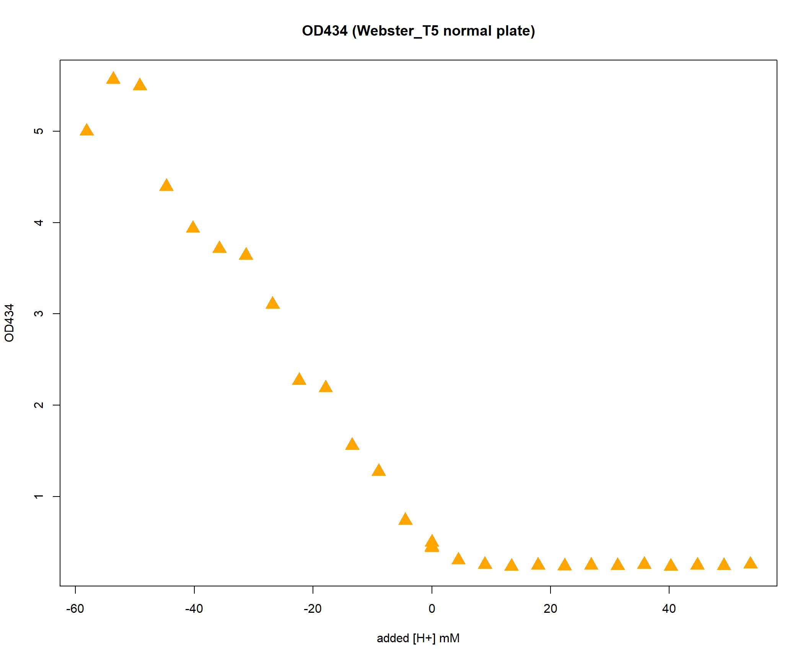
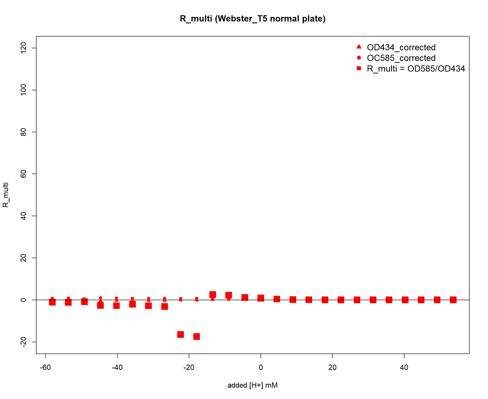

220407_pH_troubleshooting
KiseokUchicago
2022-04-07
Last updated: 2022-04-12
Checks: 7 0
Knit directory: Denit_visualization_R/
This reproducible R Markdown analysis was created with workflowr (version 1.6.2). The Checks tab describes the reproducibility checks that were applied when the results were created. The Past versions tab lists the development history.
Great! Since the R Markdown file has been committed to the Git repository, you know the exact version of the code that produced these results.
Great job! The global environment was empty. Objects defined in the global environment can affect the analysis in your R Markdown file in unknown ways. For reproduciblity it’s best to always run the code in an empty environment.
The command set.seed(20210924) was run prior to running the code in the R Markdown file. Setting a seed ensures that any results that rely on randomness, e.g. subsampling or permutations, are reproducible.
Great job! Recording the operating system, R version, and package versions is critical for reproducibility.
Nice! There were no cached chunks for this analysis, so you can be confident that you successfully produced the results during this run.
Great job! Using relative paths to the files within your workflowr project makes it easier to run your code on other machines.
Great! You are using Git for version control. Tracking code development and connecting the code version to the results is critical for reproducibility.
The results in this page were generated with repository version 0b26fbd. See the Past versions tab to see a history of the changes made to the R Markdown and HTML files.
Note that you need to be careful to ensure that all relevant files for the analysis have been committed to Git prior to generating the results (you can use wflow_publish or wflow_git_commit). workflowr only checks the R Markdown file, but you know if there are other scripts or data files that it depends on. Below is the status of the Git repository when the results were generated:
Ignored files:
Ignored: .Rhistory
Ignored: .Rproj.user/
Untracked files:
Untracked: 220131_df_ammonia_bcf.xlsx
Untracked: data/120321_soil_buffering_capacity_Nichols-B.xlsx
Untracked: data/210911_TOC_sample_plate1.xlsx
Untracked: data/210922_Griess_sample_plate1-investigating.xlsx
Untracked: data/210922_Griess_sample_plate1.xlsx
Untracked: data/210927_TOC_sample_plate1_100ul.xlsx
Untracked: data/210927_TOC_sample_plate1_10ul.xlsx
Untracked: data/210928_Griess_sample_plate1.xlsx
Untracked: data/211005_Griess_sample_plate1.xlsx
Untracked: data/211007_Griess_blank_plate1.xlsx
Untracked: data/211007_Griess_blank_plate2.xlsx
Untracked: data/211008_Griess_blank_plate0.xlsx
Untracked: data/211008_Griess_blank_plate1.xlsx
Untracked: data/211017_Griess_plate0.xlsx
Untracked: data/211017_Griess_plate1.xlsx
Untracked: data/211017_Griess_plate2.xlsx
Untracked: data/211017_Griess_plate3.xlsx
Untracked: data/211017_Griess_plate4.xlsx
Untracked: data/211017_Griess_plate5.xlsx
Untracked: data/211017_Griess_plate6.xlsx
Untracked: data/211017_Griess_plate7.xlsx
Untracked: data/211017_Griess_plate8.xlsx
Untracked: data/211019_Griess_plate1.xlsx
Untracked: data/211020_Griess_plate0.xlsx
Untracked: data/211020_Griess_plate1.xlsx
Untracked: data/211020_df_full_innate.xlsx
Untracked: data/211025_Griess_no3_fit_plate0.xlsx
Untracked: data/211025_Griess_no3_fit_plate1.xlsx
Untracked: data/211025_Griess_plate0.xlsx
Untracked: data/211025_Griess_plate1.xlsx
Untracked: data/211028_Griess_plate1.xlsx
Untracked: data/211028_Griess_plate1_no3_fit.xlsx
Untracked: data/211028_Griess_plate2.xlsx
Untracked: data/211028_Griess_plate2_no3_fit.xlsx
Untracked: data/211028_Griess_plate3.xlsx
Untracked: data/211028_Griess_plate3_no3_fit.xlsx
Untracked: data/211028_Griess_plate4.xlsx
Untracked: data/211028_Griess_plate4_no3_fit.xlsx
Untracked: data/211028_time_table.xlsx
Untracked: data/211127_Griess_SUP1.xlsx
Untracked: data/211127_Griess_SUP11.xlsx
Untracked: data/211127_Griess_SUP3.xlsx
Untracked: data/211127_Griess_SUP5.xlsx
Untracked: data/211127_Griess_SUP7.xlsx
Untracked: data/211127_Griess_SUP9.xlsx
Untracked: data/211127_Griess_plate0.xlsx
Untracked: data/211127_time_table.xlsx
Untracked: data/211128_Griess_plate1.xlsx
Untracked: data/211128_Griess_plate10.xlsx
Untracked: data/211128_Griess_plate11.xlsx
Untracked: data/211128_Griess_plate2.xlsx
Untracked: data/211128_Griess_plate3.xlsx
Untracked: data/211128_Griess_plate4.xlsx
Untracked: data/211128_Griess_plate5.xlsx
Untracked: data/211128_Griess_plate6.xlsx
Untracked: data/211128_Griess_plate7.xlsx
Untracked: data/211128_Griess_plate8.xlsx
Untracked: data/211128_Griess_plate9.xlsx
Untracked: data/211128_time_table.xlsx
Untracked: data/211201_pH_colorimetric.xlsx
Untracked: data/211203_slurry_vs_water_drying_table.xlsx
Untracked: data/211203_slurry_vs_water_drying_time.xlsx
Untracked: data/211208_pH_colorimetric_T3.xlsx
Untracked: data/211208_pH_colorimetric_T4.xlsx
Untracked: data/211208_pH_colorimetric_T5.xlsx
Untracked: data/211208_pH_colorimetric_plate1.xlsx
Untracked: data/211208_pH_colorimetric_plate2.xlsx
Untracked: data/211208_pH_colorimetric_plate3.xlsx
Untracked: data/211208_time_table.xlsx
Untracked: data/211209_OD600_T1.xlsx
Untracked: data/211209_OD600_T2.xlsx
Untracked: data/211209_OD600_T3.xlsx
Untracked: data/211209_time_table.xlsx
Untracked: data/211210_pH_colorimetric_T0.xlsx
Untracked: data/211210_pH_colorimetric_T1.xlsx
Untracked: data/211210_pH_colorimetric_T2.xlsx
Untracked: data/211210_pH_colorimetric_T3.xlsx
Untracked: data/211210_time_table.xlsx
Untracked: data/211218_pH_colorimetric_t0.xlsx
Untracked: data/211218_pH_colorimetric_t1.xlsx
Untracked: data/211218_pH_colorimetric_t2.xlsx
Untracked: data/211218_pH_colorimetric_t3.xlsx
Untracked: data/211218_pH_colorimetric_t4.xlsx
Untracked: data/211218_time_table.xlsx
Untracked: data/211220_Griess_plate1.xlsx
Untracked: data/211220_Griess_plate10.xlsx
Untracked: data/211220_Griess_plate11.xlsx
Untracked: data/211220_Griess_plate2.xlsx
Untracked: data/211220_Griess_plate3.xlsx
Untracked: data/211220_Griess_plate4.xlsx
Untracked: data/211220_Griess_plate5.xlsx
Untracked: data/211220_Griess_plate6.xlsx
Untracked: data/211220_Griess_plate7.xlsx
Untracked: data/211220_Griess_plate8.xlsx
Untracked: data/211220_Griess_plate9.xlsx
Untracked: data/211220_time_table_AU.xlsx
Untracked: data/211220_time_table_BN.xlsx
Untracked: data/211224_TOC_sample_plate1.xlsx
Untracked: data/220103_Griess_T0.xlsx
Untracked: data/220103_Griess_T1.xlsx
Untracked: data/220103_Griess_T11.xlsx
Untracked: data/220103_Griess_T12.xlsx
Untracked: data/220103_Griess_T2.xlsx
Untracked: data/220103_Griess_T3.xlsx
Untracked: data/220103_Griess_T4.xlsx
Untracked: data/220103_Griess_T5.xlsx
Untracked: data/220103_Griess_T6.xlsx
Untracked: data/220103_Griess_T7.xlsx
Untracked: data/220103_Griess_T8.xlsx
Untracked: data/220103_Griess_T9.xlsx
Untracked: data/220103_time_table.xlsx
Untracked: data/220106_Ammonia_sample_plate1.xlsx
Untracked: data/220107-2_Ammonia_sample_plate1.xlsx
Untracked: data/220107-3_Ammonia_sample_plate1.xlsx
Untracked: data/220107-4_Ammonia_sample_plate1.xlsx
Untracked: data/220107-5_Ammonia_sample_plate1.xlsx
Untracked: data/220107-6_Ammonia_sample_plate1.xlsx
Untracked: data/220107-7_Ammonia_sample_plate1.xlsx
Untracked: data/220107-8_Ammonia_sample_plate1.xlsx
Untracked: data/220107-9_Ammonia_sample_plate1.xlsx
Untracked: data/220107_Ammonia_sample_plate1.xlsx
Untracked: data/220108_Ammonia_sample_plate1.xlsx
Untracked: data/220110_Ammonia_sample_plate1.xlsx
Untracked: data/220110_Ammonia_sample_plate2.xlsx
Untracked: data/220111_Ammonia_sample_T0.xlsx
Untracked: data/220111_Ammonia_sample_T1.xlsx
Untracked: data/220111_Ammonia_sample_T2.xlsx
Untracked: data/220111_Ammonia_sample_T3.xlsx
Untracked: data/220111_TOC_sample_plate1.xlsx
Untracked: data/220112_Ammonia_sample_T11.xlsx
Untracked: data/220112_Ammonia_sample_T12.xlsx
Untracked: data/220112_Ammonia_sample_T4.xlsx
Untracked: data/220112_Ammonia_sample_T5.xlsx
Untracked: data/220112_Ammonia_sample_T6.xlsx
Untracked: data/220112_Ammonia_sample_T7.xlsx
Untracked: data/220112_Ammonia_sample_T8.xlsx
Untracked: data/220112_Ammonia_sample_T9.xlsx
Untracked: data/220113_pH_colorimetric_T0.xlsx
Untracked: data/220113_pH_colorimetric_T12.xlsx
Untracked: data/220113_pH_colorimetric_T2.xlsx
Untracked: data/220113_pH_colorimetric_T3.xlsx
Untracked: data/220113_pH_colorimetric_T8.xlsx
Untracked: data/220125_pH_colorimetric_pH1_mu_opt0.099.xlsx
Untracked: data/220125_pH_colorimetric_pH1_using6.66.xlsx
Untracked: data/220125_pH_colorimetric_pH2_mu_opt0.099.xlsx
Untracked: data/220125_pH_colorimetric_pH2_using6.66.xlsx
Untracked: data/220125_time_table.xlsx
Untracked: data/220128_Ammonia_sample_plate1.xlsx
Untracked: data/220128_Ammonia_sample_plate2.xlsx
Untracked: data/220128_Ammonia_sample_plate3.xlsx
Untracked: data/220128_Ammonia_sample_plate4.xlsx
Untracked: data/220128_Ammonia_sample_plate5.xlsx
Untracked: data/220128_Ammonia_sample_plate6.xlsx
Untracked: data/220128_Griess_plate1.xlsx
Untracked: data/220128_Griess_plate2.xlsx
Untracked: data/220128_Griess_plate3.xlsx
Untracked: data/220128_Griess_plate4.xlsx
Untracked: data/220128_Griess_plate5.xlsx
Untracked: data/220128_Griess_plate6.xlsx
Untracked: data/220128_time_table.xlsx
Untracked: data/220131_Ammonia_sample_plate1.xlsx
Untracked: data/220131_Ammonia_sample_plate2.xlsx
Untracked: data/220131_Ammonia_sample_plate3.xlsx
Untracked: data/220131_Ammonia_sample_plate4.xlsx
Untracked: data/220131_Ammonia_sample_plate5.xlsx
Untracked: data/220131_Ammonia_sample_plate6.xlsx
Untracked: data/220131_Griess_plate1.xlsx
Untracked: data/220131_Griess_plate2.xlsx
Untracked: data/220131_Griess_plate3.xlsx
Untracked: data/220131_Griess_plate4.xlsx
Untracked: data/220131_Griess_plate5.xlsx
Untracked: data/220131_Griess_plate6.xlsx
Untracked: data/220131_pH_colorimetric_pH1_mu_opt_T0.xlsx
Untracked: data/220131_pH_colorimetric_pH2_mu_opt_T0.xlsx
Untracked: data/220131_time_table.xlsx
Untracked: data/220327_Griess_plate1.xlsx
Untracked: data/220327_Griess_plate10.xlsx
Untracked: data/220327_Griess_plate11.xlsx
Untracked: data/220327_Griess_plate12.xlsx
Untracked: data/220327_Griess_plate13.xlsx
Untracked: data/220327_Griess_plate14.xlsx
Untracked: data/220327_Griess_plate15.xlsx
Untracked: data/220327_Griess_plate16.xlsx
Untracked: data/220327_Griess_plate2.xlsx
Untracked: data/220327_Griess_plate3.xlsx
Untracked: data/220327_Griess_plate4.xlsx
Untracked: data/220327_Griess_plate5.xlsx
Untracked: data/220327_Griess_plate6.xlsx
Untracked: data/220327_Griess_plate7.xlsx
Untracked: data/220327_Griess_plate8.xlsx
Untracked: data/220327_Griess_plate9.xlsx
Untracked: data/220327_time_table.xlsx
Untracked: data/220329_pH_colorimetric_pH1_mu_opt_T0.xlsx
Untracked: data/220329_pH_colorimetric_pH2_mu_opt_T0.xlsx
Untracked: data/220329_pH_colorimetric_pH3_mu_opt_T0.xlsx
Untracked: data/220329_pH_colorimetric_pH4_mu_opt_T0.xlsx
Untracked: data/220329_pH_colorimetric_pH6_mu_opt_T0.xlsx
Untracked: data/220329_pH_colorimetric_pH7_mu_opt_T0.xlsx
Untracked: data/220407_pH_colorimetric_pH3_half_mu_opt_T0.xlsx
Untracked: data/220407_pH_colorimetric_pH_base_treatment_mu_opt_T0.xlsx
Untracked: data/220407_pH_colorimetric_pH_standard_150ul_mu_opt_T0.xlsx
Untracked: data/220407_pH_colorimetric_pH_standard_300ul_mu_opt_T0.xlsx
Untracked: data/220407_pH_colorimetric_pH_standard_60ul_mu_opt_T0.xlsx
Untracked: data/ForKiseok_from_Dr_Cuhel.xlsx
Untracked: data/ForKiseok_from_Dr_Cuhel_format_edited.xlsx
Untracked: data/OD434_OD585_C_WB_T5_220329.xlsx
Untracked: data/OD434_OD585_WW_C_T0_220329.xlsx
Untracked: data/OD434_OD585_pH3_half_area_220407.xlsx
Untracked: data/OD434_OD585_pH_base_treated_T0_220407.xlsx
Untracked: data/SPNa_86437_021122_edit.xlsx
Untracked: data/SPNa_86437_021122_edit2.xlsx
Untracked: data/TOC_TN_measurement_2_labs_211014.xlsx
Untracked: data/dry_weight_curve(9.5.21).xlsx
Untracked: data/pH_data(11.17.21)-Midway_etc.xlsx
Untracked: data/pH_data(12.6.21)-Midway_incubation_endpoint.xlsx
Untracked: data/pH_data(9.14.21).xlsx
Untracked: data/pH_data(9.28.21).xlsx
Untracked: data/pH_standard_150ul_220407.xlsx
Untracked: data/pH_standard_300ul_220407.xlsx
Untracked: data/pH_standard_60ul_220407.xlsx
Untracked: past_figures/
Unstaged changes:
Modified: analysis/220131_Ammonia_pH_perturbation3.Rmd
Note that any generated files, e.g. HTML, png, CSS, etc., are not included in this status report because it is ok for generated content to have uncommitted changes.
These are the previous versions of the repository in which changes were made to the R Markdown (analysis/220407_pH_troubleshooting.Rmd) and HTML (docs/220407_pH_troubleshooting.html) files. If you’ve configured a remote Git repository (see ?wflow_git_remote), click on the hyperlinks in the table below to view the files as they were in that past version.
| File | Version | Author | Date | Message |
|---|---|---|---|---|
| Rmd | 0b26fbd | KiseokUchicago | 2022-04-12 | wflow_publish(c(“analysis/220327_Griess_3_soil_pH_perturbation.Rmd”, |
Time series analysis - pH troubleshooting
Researcher: Kiseok Lee
Experiment Date: 4/7/22
Analysis Date: 4/7/21
Lab: Seppe Kuehn
First part, let’s see how OD434 and OD585 are affected.
Import data
df_pH1 <- openxlsx::read.xlsx("data/220407_pH_colorimetric_pH_base_treatment_mu_opt_T0.xlsx")
dim(df_pH1)[1] 12 12# filter wells with too much soil
df_pH1 %<>%
filter(!(Well %in% c("A06"))) # Filter defect A06 (I think I put 20ul of base)
# df_pH2 %<>% filter(!(Well %in%
# c('F11'))) # Less than 90ul of sample
# df_pH3 %<>% filter(!(Well %in%
# c('H01'))) # Filter defect A05 df_pH4
# %<>% filter(!(Well %in% c('F11'))) #
# Less than 90ul of sample df_pH6 %<>%
# filter(!(Well %in% c('A05'))) #
# Filter defect A05 df_pH7 %<>%
# filter(!(Well %in% c('F11'))) # Less
# than 90ul of sample
# mols and molarity unit conversion
# test df_pH <- df_pH_T %>%
# filter(Titration_type %in%
# c('NaOH','HCl'))
df_pH <- df_pH1
dim(df_pH) # 160[1] 11 12Added_Volume <- 1.7 # ml
# Soil_mg <- 0.85 moisture_percent_1 =
# 63.1 # Webster Added_Volume +
# Soil_mg*(moisture_percent_1/100)
# moisture_percent_2 = 6.8 #
# WarrenWoods1 Added_Volume +
# Soil_mg*(moisture_percent_2/100)
# moisture_percent_3 = 9.0 # Crerar7
# Added_Volume +
# Soil_mg*(moisture_percent_3/100)
df_pH$Added_ul <- ifelse(df_pH$Titration_type ==
"NaOH", -1 * df_pH$Added_ul, df_pH$Added_ul) # HCl is +, NaOH is -
df_pH %<>%
mutate(H_mol = Concentration_M * Added_ul *
10^(-6)) # Calculate H mol
df_pH$Volume = 1.7
# df_pH$Volume <- ifelse(df_pH$Soil ==
# 'Webster_pH3.3', Added_Volume +
# Soil_mg*(moisture_percent_1/100),
# ifelse(df_pH$Soil ==
# 'WarrenWoods1_pH5.23', Added_Volume +
# Soil_mg*(moisture_percent_2/100),
# ifelse(df_pH$Soil ==
# 'Crerar7_pH8.05', Added_Volume +
# Soil_mg*(moisture_percent_3/100),
# 0))) # Calc total volume#
# df_pH$Volume %>% unique()
df_pH %<>%
mutate(H_Molarity = H_mol/(Volume * 10^(-3)))
df_pH %<>%
mutate(H_mM = H_Molarity * 1000)
# openxlsx::write.xlsx(df_pH,
# 'df_pH.xlsx')
# how many levels of H_mM?
df_pH %>%
filter(Soil == "Webster_pH3.3") %>%
select(H_mM) %>%
unique() %>%
arrange(H_mM)[1] H_mM
<0 rows> (or 0-length row.names)df_pH %>%
filter(Soil == "WarrenWoods1_pH5.23") %>%
select(H_mM) %>%
unique() %>%
arrange(H_mM)[1] H_mM
<0 rows> (or 0-length row.names)df_pH %>%
filter(Soil == "Crerar7_pH8.05") %>%
select(H_mM) %>%
unique() %>%
arrange(H_mM)[1] H_mM
<0 rows> (or 0-length row.names)colnames(df_pH) [1] "Well" "Nitrite_input" "Nitrate_input" "Ammonium_input"
[5] "Soil" "Sample_type" "Titration_type" "Unit"
[9] "Concentration_M" "Added_ul" "Time_point" "pH_colorimetric"
[13] "H_mol" "Volume" "H_Molarity" "H_mM" # average the pH 220407 only used 1
# replicate. So, no need to average.
# df_pH_ave <- df_pH %>%
# group_by(Nitrite_input,
# Nitrate_input, Soil, Titration_type,
# Concentration_M, Added_ul,
# Sample_type, H_mol, H_Molarity, H_mM,
# Time_point, Time_minutes, Time_hours,
# Time_days) %>% summarise(Ave_pH =
# mean(pH_colorimetric), Std_pH =
# sd(pH_colorimetric)) %>% ungroup()
# colnames(df_pH_ave)plot OD434 and OD585
df_OD <- read.xlsx("data/OD434_OD585_pH_base_treated_T0_220407.xlsx")
colnames(df_OD)[1] <- "Well"
# remove A06
df_OD %<>%
filter(!(Well == "A06"))
df_OD_merged <- df_OD %>%
left_join(df_pH, by = c(Well = "Well"))
df_OD <- df_OD_merged
# use this instead: OD434
plot(df_OD$H_mM, df_OD$OD434_background,
col = "orange", lty = 1, pch = 17, lwd = 1,
main = "OD434 (Control: water)", ylab = "OD434",
xlab = "added [H+] mM", ylim = c(-1,
3), cex = 2)
points(df_OD$H_mM, df_OD$OD434, col = "blue",
pch = 17, cex = 2)
points(df_OD$H_mM, df_OD$OD434_subtraction,
col = "red", pch = 17, lwd = 1)
legend("topright", legend = c("Background",
"After dye", "(After dye - Background)"),
col = c("orange", "blue", "red"), bty = "n",
pch = 17, cex = 1, box.lty = 0)# use this instead
plot(df_OD$H_mM, df_OD$OD585_background,
col = "orange", lty = 1, pch = 16, lwd = 1,
main = "OD585 (Control: water)", ylab = "OD585",
xlab = "added [H+] mM", ylim = c(0, 3),
cex = 2)
points(df_OD$H_mM, df_OD$OD585, col = "blue",
pch = 16, cex = 2)
points(df_OD$H_mM, df_OD$OD585_subtraction,
col = "red", pch = 16, lwd = 1)
legend("topright", legend = c("Background",
"After dye", "(After dye - Background)"),
col = c("orange", "blue", "red"), bty = "n",
pch = 16, cex = 1, box.lty = 0)# R_multi?
plot(df_OD$H_mM, df_OD$R_multi, col = "red",
lty = 1, pch = 15, lwd = 1, main = "R_multi (Control: water)",
ylab = "R_multi", xlab = "added [H+] mM",
cex = 2)# show R_multi and a_434, a_585
plot(df_OD$H_mM, df_OD$R_multi, col = "red",
lty = 1, pch = 15, lwd = 1, main = "R_multi (Control: water)",
ylab = "R_multi", xlab = "added [H+] mM",
ylim = c(-20, 100), cex = 2)
abline(a = 0, b = 0)
points(df_OD$H_mM, df_OD$OD434_subtraction,
col = "red", pch = 17)
points(df_OD$H_mM, df_OD$OD585_subtraction,
col = "red", pch = 16, lwd = 1)
legend("topright", legend = c("OD434_corrected",
"OC585_corrected", "R_multi = OD585/OD434"),
pch = c(17, 16, 15), bty = "n", col = "red",
cex = 1.2, box.lty = 0)# R_multi and pH
plot(df_OD$pH_colorimetric, df_OD$R_multi,
col = "royalblue", lty = 1, pch = 18,
lwd = 1, main = "R_multi (Control: water)",
ylab = "R_multi", xlab = "pH_colorimetric",
cex = 1.5)For the second part, let’s see how OD434 and OD585 are affected
Import data
df_150ul <- openxlsx::read.xlsx("data/220407_pH_colorimetric_pH_standard_150ul_mu_opt_T0.xlsx")
df_300ul <- openxlsx::read.xlsx("data/220407_pH_colorimetric_pH_standard_300ul_mu_opt_T0.xlsx")
df_60ul <- openxlsx::read.xlsx("data/220407_pH_colorimetric_pH_standard_60ul_mu_opt_T0.xlsx")
df_OD_150ul <- read.xlsx("data/pH_standard_150ul_220407.xlsx")
df_OD_300ul <- read.xlsx("data/pH_standard_300ul_220407.xlsx")
df_OD_60ul <- read.xlsx("data/pH_standard_60ul_220407.xlsx")
colnames(df_OD_150ul)[1] <- "Well"
colnames(df_OD_300ul)[1] <- "Well"
colnames(df_OD_60ul)[1] <- "Well"
# merge
df_150_merged <- df_150ul %>%
left_join(df_OD_150ul, by = c(Well = "Well")) %>%
filter(!(Sample_type == "water"))
df_300_merged <- df_300ul %>%
left_join(df_OD_300ul, by = c(Well = "Well")) %>%
filter(!(Sample_type == "water"))
df_60_merged <- df_60ul %>%
left_join(df_OD_60ul, by = c(Well = "Well")) %>%
filter(!(Sample_type == "water"))
df_merged <- rbind(df_150_merged, df_300_merged,
df_60_merged)
# Does this assay predict the
# standard's pH correctly?
df_merged$amount_ul <- factor(df_merged$amount_ul)
ggplot(df_merged, aes(x = pH, y = pH_colorimetric,
color = amount_ul, group = amount_ul)) +
geom_point(size = 3, shape = 16) + geom_abline(slope = 1,
intercept = 0, show.legend = "y=x") +
# geom_line(size=1)+
# scale_fill_brewer(palette='Set2')
# +
ylab("pH by colorimetric assay \n") + xlab("\n pH standards (pH 4, 7, 10)") +
scale_x_continuous(breaks = seq(4, 10,
1), limits = c(3.5, 10.5)) + scale_y_continuous(breaks = seq(4,
10, 1), limits = c(3.5, 10.5)) + ggtitle("Effect of sampling amount for pH assay (60ul vs 150ul vs 300ul, mu_opt from water) \n") +
facet_grid(. ~ amount_ul) + mytheme_2d# use this instead: OD434
plot(df_150_merged$pH, df_150_merged$OD434_background,
col = "orange", lty = 1, pch = 17, lwd = 1,
main = "OD434 (Control: water)", ylab = "OD434",
xlab = "added [H+] mM", ylim = c(-1,
3), cex = 2)
points(df_150_merged$pH, df_150_merged$OD434,
col = "blue", pch = 17, cex = 2)
points(df_150_merged$pH, df_150_merged$OD434_subtraction,
col = "red", pch = 17, lwd = 1)
legend("topright", legend = c("Background",
"After dye", "(After dye - Background)"),
col = c("orange", "blue", "red"), bty = "n",
pch = 17, cex = 1, box.lty = 0)# use this instead
plot(df_150_merged$pH, df_150_merged$OD585_background,
col = "orange", lty = 1, pch = 16, lwd = 1,
main = "OD585 (Control: water)", ylab = "OD585",
xlab = "added [H+] mM", ylim = c(-1,
10), xlim = c(1, 11), cex = 2)
points(df_150_merged$pH, df_150_merged$OD585,
col = "blue", pch = 16, cex = 2)
points(df_150_merged$pH, df_150_merged$OD585_subtraction,
col = "red", pch = 16, lwd = 1)
legend("topright", legend = c("Background",
"After dye", "(After dye - Background)"),
col = c("orange", "blue", "red"), bty = "n",
pch = 16, cex = 1, box.lty = 0)# R_multi?
plot(df_150_merged$pH, df_150_merged$R_multi,
col = "red", lty = 1, pch = 15, lwd = 1,
main = "R_multi (Control: water)", ylab = "R_multi",
xlab = "added [H+] mM", cex = 2)
# show R_multi and a_434, a_585
plot(df_150_merged$pH, df_150_merged$R_multi,
col = "red", lty = 1, pch = 15, lwd = 1,
main = "R_multi (Control: water)", ylab = "R_multi",
xlab = "added [H+] mM", ylim = c(-20,
100), cex = 2)
abline(a = 0, b = 0)
points(df_150_merged$pH, df_150_merged$OD434_subtraction,
col = "red", pch = 17)
points(df_150_merged$pH, df_150_merged$OD585_subtraction,
col = "red", pch = 16, lwd = 1)
legend("topright", legend = c("OD434_corrected",
"OC585_corrected", "R_multi = OD585/OD434"),
pch = c(17, 16, 15), bty = "n", col = "red",
cex = 1.2, box.lty = 0)# R_multi and pH
plot(df_150_merged$pH_colorimetric, df_150_merged$R_multi,
col = "royalblue", lty = 1, pch = 18,
lwd = 1, main = "R_multi (Control: water)",
ylab = "R_multi", xlab = "pH_colorimetric",
cex = 1.5)Third part is to compare pH3 vs pH3_half
Same mu_opt_T0 was used for both plates.
df_pH3 <- openxlsx::read.xlsx("data/220329_pH_colorimetric_pH3_mu_opt_T0.xlsx")
df_pH3_half <- openxlsx::read.xlsx("data/220407_pH_colorimetric_pH3_half_mu_opt_T0.xlsx")
df_pH3 %<>%
filter(!(Well %in% c("H01", "G01"))) # Filter defect
df_pH3_half %<>%
filter(!(Well %in% c("H01", "G01"))) # Filter defect
df_pH3$Plate_type <- "Normal"
df_pH3_half$Plate_type <- "Half_area"
df_time <- openxlsx::read.xlsx("data/220327_time_table.xlsx")
df_time$Time_hours <- round(df_time$Time_hours,
1)
df_time$Time_days <- round(df_time$Time_days,
2)
df_pH_T <- rbind(df_pH3, df_pH3_half)
df_pH_T %<>%
left_join(df_time, by = c(Time_point = "Time_point"))
dim(df_pH_T) # 575[1] 188 17# remove NA
dim(df_pH_T) # 575[1] 188 17df_pH_T[is.na(df_pH_T)] [1] NA NA NA NA NA NA NA NA NA NA NA NA NA NA NA NA NA NA NA NA NA NA NA NA NA
[26] NA NA NA NA NA NA NA NA NA NA NA NA NA NA NA NA NA NA NA NA NA NA NA NA NA
[51] NA NA NA NA NA NA NA NA NA NA NA NA NA NA NA NA NA NA NA NA NA NA NA NA NA
[76] NA NA NA NA NA NA NA NA NA NA NA NA NA NA NA NA NA NA NA NA NA NA NA NA NA
[101] NA NA NA NA NA NA NA NA NA NA NA NA NAdf_na <- df_pH_T[rowSums(is.na(df_pH_T)) >
0, ]
# df_pH_T <- na.omit(df_pH_T)
df_pH_T <- df_pH_T[rowSums(is.na(df_pH_T)) ==
0, ]
dim(df_pH_T) # 548[1] 171 17# Change the soil names to include pH
# df_pH_T$Soil <-
# str_replace(df_pH_T$Soil,'NicholsC','NicholsC_pH7')
# df_pH_T$Soil <-
# str_replace(df_pH_T$Soil,'Allandale','Allandale_pH4')
# df_pH_T$Soil <- factor(df_pH_T$Soil,
# levels = c('NicholsC_pH7',
# 'Allandale_pH4'))
# mols and molarity unit conversion
# test
df_pH <- df_pH_T %>%
filter(Titration_type %in% c("NaOH",
"HCl"))
dim(df_pH) # 160[1] 123 17Added_Volume <- 1.7 # ml
Soil_mg <- 0.85
moisture_percent_1 = 63.1 # Webster
Added_Volume + Soil_mg * (moisture_percent_1/100)[1] 2.23635moisture_percent_2 = 6.8 # WarrenWoods1
Added_Volume + Soil_mg * (moisture_percent_2/100)[1] 1.7578moisture_percent_3 = 9 # Crerar7
Added_Volume + Soil_mg * (moisture_percent_3/100)[1] 1.7765df_pH$Added_ul <- ifelse(df_pH$Titration_type ==
"NaOH", -1 * df_pH$Added_ul, df_pH$Added_ul) # HCl is +, NaOH is -
df_pH %<>%
mutate(H_mol = Concentration_M * Added_ul *
10^(-6)) # Calculate H mol
df_pH$Volume <- ifelse(df_pH$Soil == "Webster_pH3.3",
Added_Volume + Soil_mg * (moisture_percent_1/100),
ifelse(df_pH$Soil == "WarrenWoods1_pH5.23",
Added_Volume + Soil_mg * (moisture_percent_2/100),
ifelse(df_pH$Soil == "Crerar7_pH8.05",
Added_Volume + Soil_mg * (moisture_percent_3/100),
0))) # Calc total volume# df_pH$Volume %>% unique()
df_pH %<>%
mutate(H_Molarity = H_mol/(Volume * 10^(-3)))
df_pH %<>%
mutate(H_mM = H_Molarity * 1000)
# openxlsx::write.xlsx(df_pH,
# 'df_pH.xlsx')
# how many levels of H_mM?
df_pH %>%
filter(Soil == "Webster_pH3.3") %>%
select(H_mM) %>%
unique() %>%
arrange(H_mM) H_mM
1 -58.130436
2 -53.658864
3 -49.187292
4 -44.715720
5 -40.244148
6 -35.772576
7 -31.301004
8 -26.829432
9 -22.357860
10 -17.886288
11 -13.414716
12 -8.943144
13 -4.471572
14 0.000000
15 4.471572
16 8.943144
17 13.414716
18 17.886288
19 22.357860
20 26.829432
21 31.301004
22 35.772576
23 40.244148
24 44.715720
25 49.187292
26 53.658864df_pH %>%
filter(Soil == "WarrenWoods1_pH5.23") %>%
select(H_mM) %>%
unique() %>%
arrange(H_mM)[1] H_mM
<0 rows> (or 0-length row.names)df_pH %>%
filter(Soil == "Crerar7_pH8.05") %>%
select(H_mM) %>%
unique() %>%
arrange(H_mM) H_mM
1 -95.693780
2 -90.064734
3 -84.435688
4 -78.806642
5 -73.177596
6 -67.548551
7 -61.919505
8 -56.290459
9 -50.661413
10 -45.032367
11 -39.403321
12 -33.774275
13 -28.145229
14 -22.516184
15 -16.887138
16 -11.258092
17 -5.629046
18 0.000000
19 5.629046
20 11.258092
21 16.887138
22 22.516184
23 28.145229
24 33.774275
25 39.403321
26 45.032367
27 50.661413
28 56.290459
29 61.919505
30 67.548551
31 73.177596
32 78.806642
33 84.435688
34 90.064734colnames(df_pH) [1] "Well" "Nitrite_input" "Nitrate_input" "Ammonium_input"
[5] "Soil" "Sample_type" "Titration_type" "Unit"
[9] "Concentration_M" "Added_ul" "Time_point" "pH_colorimetric"
[13] "Plate_type" "Date" "Time_minutes" "Time_hours"
[17] "Time_days" "H_mol" "Volume" "H_Molarity"
[21] "H_mM" df_pH$Plate_type [1] "Normal" "Normal" "Normal" "Normal" "Normal" "Normal"
[7] "Normal" "Normal" "Normal" "Normal" "Normal" "Normal"
[13] "Normal" "Normal" "Normal" "Normal" "Normal" "Normal"
[19] "Normal" "Normal" "Normal" "Normal" "Normal" "Normal"
[25] "Normal" "Normal" "Normal" "Normal" "Normal" "Normal"
[31] "Normal" "Normal" "Normal" "Normal" "Normal" "Normal"
[37] "Normal" "Normal" "Normal" "Normal" "Normal" "Normal"
[43] "Normal" "Normal" "Normal" "Normal" "Normal" "Normal"
[49] "Normal" "Normal" "Normal" "Normal" "Normal" "Normal"
[55] "Normal" "Normal" "Normal" "Normal" "Normal" "Normal"
[61] "Normal" "Half_area" "Half_area" "Half_area" "Half_area" "Half_area"
[67] "Half_area" "Half_area" "Half_area" "Half_area" "Half_area" "Half_area"
[73] "Half_area" "Half_area" "Half_area" "Half_area" "Half_area" "Half_area"
[79] "Half_area" "Half_area" "Half_area" "Half_area" "Half_area" "Half_area"
[85] "Half_area" "Half_area" "Half_area" "Half_area" "Half_area" "Half_area"
[91] "Half_area" "Half_area" "Half_area" "Half_area" "Half_area" "Half_area"
[97] "Half_area" "Half_area" "Half_area" "Half_area" "Half_area" "Half_area"
[103] "Half_area" "Half_area" "Half_area" "Half_area" "Half_area" "Half_area"
[109] "Half_area" "Half_area" "Half_area" "Half_area" "Half_area" "Half_area"
[115] "Half_area" "Half_area" "Half_area" "Half_area" "Half_area" "Half_area"
[121] "Half_area" "Half_area" "Half_area"# there is something wrong about df_pH
# H_mM == 0
df_pH %>%
filter(H_mM == 0) Well Nitrite_input Nitrate_input Ammonium_input Soil Sample_type
1 E12 0 2 0 Webster_pH3.3 Slurry
2 F11 0 2 0 Webster_pH3.3 Slurry
3 F12 0 2 0 Webster_pH3.3 Slurry
4 G02 0 2 0 Crerar7_pH8.05 Slurry
5 E12 0 2 0 Webster_pH3.3 Slurry
6 F11 0 2 0 Webster_pH3.3 Slurry
7 F12 0 2 0 Webster_pH3.3 Slurry
8 G02 0 2 0 Crerar7_pH8.05 Slurry
Titration_type Unit Concentration_M Added_ul Time_point pH_colorimetric
1 HCl 0 0 20 WB_T5 4.327327
2 HCl 0 0 20 WB_T5 4.219219
3 HCl 0 0 20 WB_T5 4.183183
4 HCl 0 0 20 C_T5 7.942943
5 HCl 0 0 20 WB_T5 4.303303
6 HCl 0 0 20 WB_T5 4.219219
7 HCl 0 0 20 WB_T5 4.183183
8 HCl 0 0 20 C_T5 8.423423
Plate_type Date Time_minutes Time_hours Time_days H_mol Volume
1 Normal 44627.79 1662 27.7 1.15 0 2.23635
2 Normal 44627.79 1662 27.7 1.15 0 2.23635
3 Normal 44627.79 1662 27.7 1.15 0 2.23635
4 Normal 44627.81 1590 26.5 1.10 0 1.77650
5 Half_area 44627.79 1662 27.7 1.15 0 2.23635
6 Half_area 44627.79 1662 27.7 1.15 0 2.23635
7 Half_area 44627.79 1662 27.7 1.15 0 2.23635
8 Half_area 44627.81 1590 26.5 1.10 0 1.77650
H_Molarity H_mM
1 0 0
2 0 0
3 0 0
4 0 0
5 0 0
6 0 0
7 0 0
8 0 0# let's remove G1 as well
df_pH Well Nitrite_input Nitrate_input Ammonium_input Soil Sample_type
1 A01 0 2 0 Crerar7_pH8.05 Slurry
2 A02 0 2 0 Crerar7_pH8.05 Slurry
3 A03 0 2 0 Crerar7_pH8.05 Slurry
4 A04 0 2 0 Crerar7_pH8.05 Slurry
5 A05 0 2 0 Crerar7_pH8.05 Slurry
6 A06 0 2 0 Crerar7_pH8.05 Slurry
7 A07 0 2 0 Webster_pH3.3 Slurry
8 A08 0 2 0 Webster_pH3.3 Slurry
9 A09 0 2 0 Webster_pH3.3 Slurry
10 A10 0 2 0 Webster_pH3.3 Slurry
11 A11 0 2 0 Webster_pH3.3 Slurry
12 A12 0 2 0 Webster_pH3.3 Slurry
13 B01 0 2 0 Crerar7_pH8.05 Slurry
14 B02 0 2 0 Crerar7_pH8.05 Slurry
15 B03 0 2 0 Crerar7_pH8.05 Slurry
16 B04 0 2 0 Crerar7_pH8.05 Slurry
17 B05 0 2 0 Crerar7_pH8.05 Slurry
18 B06 0 2 0 Crerar7_pH8.05 Slurry
19 B07 0 2 0 Webster_pH3.3 Slurry
20 B08 0 2 0 Webster_pH3.3 Slurry
21 B09 0 2 0 Webster_pH3.3 Slurry
22 B10 0 2 0 Webster_pH3.3 Slurry
23 B11 0 2 0 Webster_pH3.3 Slurry
24 B12 0 2 0 Webster_pH3.3 Slurry
25 C01 0 2 0 Crerar7_pH8.05 Slurry
26 C02 0 2 0 Crerar7_pH8.05 Slurry
27 C03 0 2 0 Crerar7_pH8.05 Slurry
28 C04 0 2 0 Crerar7_pH8.05 Slurry
29 C05 0 2 0 Crerar7_pH8.05 Slurry
30 C06 0 2 0 Crerar7_pH8.05 Slurry
31 C07 0 2 0 Webster_pH3.3 Slurry
32 C08 0 2 0 Webster_pH3.3 Slurry
33 C09 0 2 0 Webster_pH3.3 Slurry
34 C10 0 2 0 Webster_pH3.3 Slurry
35 C11 0 2 0 Webster_pH3.3 Slurry
36 C12 0 2 0 Webster_pH3.3 Slurry
37 D01 0 2 0 Crerar7_pH8.05 Slurry
38 D02 0 2 0 Crerar7_pH8.05 Slurry
39 D03 0 2 0 Crerar7_pH8.05 Slurry
40 D04 0 2 0 Crerar7_pH8.05 Slurry
41 D05 0 2 0 Crerar7_pH8.05 Slurry
42 D06 0 2 0 Crerar7_pH8.05 Slurry
43 D07 0 2 0 Webster_pH3.3 Slurry
44 D08 0 2 0 Webster_pH3.3 Slurry
45 D09 0 2 0 Webster_pH3.3 Slurry
46 D10 0 2 0 Webster_pH3.3 Slurry
47 D11 0 2 0 Webster_pH3.3 Slurry
48 D12 0 2 0 Webster_pH3.3 Slurry
49 E02 0 2 0 Crerar7_pH8.05 Slurry
50 E03 0 2 0 Crerar7_pH8.05 Slurry
51 E04 0 2 0 Crerar7_pH8.05 Slurry
52 E05 0 2 0 Crerar7_pH8.05 Slurry
53 E07 0 2 0 Webster_pH3.3 Slurry
54 E12 0 2 0 Webster_pH3.3 Slurry
55 F01 0 2 0 Crerar7_pH8.05 Slurry
56 F02 0 2 0 Crerar7_pH8.05 Slurry
57 F03 0 2 0 Crerar7_pH8.05 Slurry
58 F04 0 2 0 Crerar7_pH8.05 Slurry
59 F11 0 2 0 Webster_pH3.3 Slurry
60 F12 0 2 0 Webster_pH3.3 Slurry
61 G02 0 2 0 Crerar7_pH8.05 Slurry
62 A01 0 2 0 Crerar7_pH8.05 Slurry
63 A02 0 2 0 Crerar7_pH8.05 Slurry
64 A03 0 2 0 Crerar7_pH8.05 Slurry
65 A04 0 2 0 Crerar7_pH8.05 Slurry
66 A05 0 2 0 Crerar7_pH8.05 Slurry
67 A06 0 2 0 Crerar7_pH8.05 Slurry
68 A07 0 2 0 Webster_pH3.3 Slurry
69 A08 0 2 0 Webster_pH3.3 Slurry
70 A09 0 2 0 Webster_pH3.3 Slurry
71 A10 0 2 0 Webster_pH3.3 Slurry
72 A11 0 2 0 Webster_pH3.3 Slurry
73 A12 0 2 0 Webster_pH3.3 Slurry
74 B01 0 2 0 Crerar7_pH8.05 Slurry
75 B02 0 2 0 Crerar7_pH8.05 Slurry
76 B03 0 2 0 Crerar7_pH8.05 Slurry
77 B04 0 2 0 Crerar7_pH8.05 Slurry
78 B05 0 2 0 Crerar7_pH8.05 Slurry
79 B06 0 2 0 Crerar7_pH8.05 Slurry
80 B07 0 2 0 Webster_pH3.3 Slurry
81 B08 0 2 0 Webster_pH3.3 Slurry
82 B09 0 2 0 Webster_pH3.3 Slurry
83 B10 0 2 0 Webster_pH3.3 Slurry
84 B11 0 2 0 Webster_pH3.3 Slurry
85 B12 0 2 0 Webster_pH3.3 Slurry
86 C01 0 2 0 Crerar7_pH8.05 Slurry
87 C02 0 2 0 Crerar7_pH8.05 Slurry
88 C03 0 2 0 Crerar7_pH8.05 Slurry
89 C04 0 2 0 Crerar7_pH8.05 Slurry
90 C05 0 2 0 Crerar7_pH8.05 Slurry
91 C06 0 2 0 Crerar7_pH8.05 Slurry
92 C07 0 2 0 Webster_pH3.3 Slurry
93 C08 0 2 0 Webster_pH3.3 Slurry
94 C09 0 2 0 Webster_pH3.3 Slurry
95 C10 0 2 0 Webster_pH3.3 Slurry
96 C11 0 2 0 Webster_pH3.3 Slurry
97 C12 0 2 0 Webster_pH3.3 Slurry
98 D01 0 2 0 Crerar7_pH8.05 Slurry
99 D02 0 2 0 Crerar7_pH8.05 Slurry
100 D03 0 2 0 Crerar7_pH8.05 Slurry
101 D04 0 2 0 Crerar7_pH8.05 Slurry
102 D05 0 2 0 Crerar7_pH8.05 Slurry
103 D06 0 2 0 Crerar7_pH8.05 Slurry
104 D07 0 2 0 Webster_pH3.3 Slurry
105 D08 0 2 0 Webster_pH3.3 Slurry
106 D09 0 2 0 Webster_pH3.3 Slurry
107 D10 0 2 0 Webster_pH3.3 Slurry
108 D11 0 2 0 Webster_pH3.3 Slurry
109 D12 0 2 0 Webster_pH3.3 Slurry
110 E01 0 2 0 Crerar7_pH8.05 Slurry
111 E02 0 2 0 Crerar7_pH8.05 Slurry
112 E03 0 2 0 Crerar7_pH8.05 Slurry
113 E04 0 2 0 Crerar7_pH8.05 Slurry
114 E05 0 2 0 Crerar7_pH8.05 Slurry
115 E07 0 2 0 Webster_pH3.3 Slurry
116 E12 0 2 0 Webster_pH3.3 Slurry
117 F01 0 2 0 Crerar7_pH8.05 Slurry
118 F02 0 2 0 Crerar7_pH8.05 Slurry
119 F03 0 2 0 Crerar7_pH8.05 Slurry
120 F04 0 2 0 Crerar7_pH8.05 Slurry
121 F11 0 2 0 Webster_pH3.3 Slurry
122 F12 0 2 0 Webster_pH3.3 Slurry
123 G02 0 2 0 Crerar7_pH8.05 Slurry
Titration_type Unit Concentration_M Added_ul Time_point pH_colorimetric
1 HCl 1 0.5 20 C_T5 8.183183
2 HCl 3 1.5 20 C_T5 8.123123
3 HCl 5 2.5 20 C_T5 7.978979
4 HCl 7 3.5 20 C_T5 8.015015
5 HCl 9 4.5 20 C_T5 7.942943
6 HCl 11 5.5 20 C_T5 7.858859
7 HCl 1 0.5 20 WB_T5 3.618619
8 HCl 3 1.5 20 WB_T5 2.789790
9 HCl 5 2.5 20 WB_T5 2.417417
10 HCl 7 3.5 20 WB_T5 2.441441
11 HCl 9 4.5 20 WB_T5 2.381381
12 HCl 11 5.5 20 WB_T5 2.405405
13 HCl 2 1.0 20 C_T5 8.027027
14 HCl 4 2.0 20 C_T5 7.954955
15 HCl 6 3.0 20 C_T5 8.075075
16 HCl 8 4.0 20 C_T5 7.954955
17 HCl 10 5.0 20 C_T5 7.882883
18 HCl 12 6.0 20 C_T5 7.954955
19 HCl 2 1.0 20 WB_T5 3.114114
20 HCl 4 2.0 20 WB_T5 2.237237
21 HCl 6 3.0 20 WB_T5 2.057057
22 HCl 8 4.0 20 WB_T5 1.252252
23 HCl 10 5.0 20 WB_T5 2.129129
24 HCl 12 6.0 20 WB_T5 2.297297
25 HCl 13 6.5 20 C_T5 7.774775
26 HCl 15 7.5 20 C_T5 8.015015
27 NaOH 1 0.5 -20 C_T5 8.471471
28 NaOH 3 1.5 -20 C_T5 8.639640
29 NaOH 5 2.5 -20 C_T5 9.000000
30 NaOH 7 3.5 -20 C_T5 9.840841
31 NaOH 1 0.5 -20 WB_T5 4.663664
32 NaOH 3 1.5 -20 WB_T5 6.093093
33 NaOH 5 2.5 -20 WB_T5 1.000000
34 NaOH 7 3.5 -20 WB_T5 1.000000
35 NaOH 9 4.5 -20 WB_T5 1.000000
36 NaOH 11 5.5 -20 WB_T5 1.000000
37 HCl 14 7.0 20 C_T5 7.606607
38 HCl 16 8.0 20 C_T5 7.786787
39 NaOH 2 1.0 -20 C_T5 8.519520
40 NaOH 4 2.0 -20 C_T5 8.927928
41 NaOH 6 3.0 -20 C_T5 9.720721
42 NaOH 8 4.0 -20 C_T5 13.000000
43 NaOH 2 1.0 -20 WB_T5 5.924925
44 NaOH 4 2.0 -20 WB_T5 1.000000
45 NaOH 6 3.0 -20 WB_T5 1.000000
46 NaOH 8 4.0 -20 WB_T5 1.000000
47 NaOH 10 5.0 -20 WB_T5 1.000000
48 NaOH 12 6.0 -20 WB_T5 1.000000
49 NaOH 11 5.5 -20 C_T5 9.636637
50 NaOH 13 6.5 -20 C_T5 1.000000
51 NaOH 15 7.5 -20 C_T5 1.000000
52 NaOH 17 8.5 -20 C_T5 1.000000
53 NaOH 13 6.5 -20 WB_T5 1.000000
54 HCl 0 0.0 20 WB_T5 4.327327
55 NaOH 10 5.0 -20 C_T5 1.000000
56 NaOH 12 6.0 -20 C_T5 1.000000
57 NaOH 14 7.0 -20 C_T5 1.000000
58 NaOH 16 8.0 -20 C_T5 1.000000
59 HCl 0 0.0 20 WB_T5 4.219219
60 HCl 0 0.0 20 WB_T5 4.183183
61 HCl 0 0.0 20 C_T5 7.942943
62 HCl 1 0.5 20 C_T5 8.291291
63 HCl 3 1.5 20 C_T5 8.063063
64 HCl 5 2.5 20 C_T5 7.930931
65 HCl 7 3.5 20 C_T5 7.918919
66 HCl 9 4.5 20 C_T5 7.870871
67 HCl 11 5.5 20 C_T5 7.846847
68 HCl 1 0.5 20 WB_T5 3.630631
69 HCl 3 1.5 20 WB_T5 2.801802
70 HCl 5 2.5 20 WB_T5 2.441441
71 HCl 7 3.5 20 WB_T5 2.285285
72 HCl 9 4.5 20 WB_T5 2.225225
73 HCl 11 5.5 20 WB_T5 2.357357
74 HCl 2 1.0 20 C_T5 8.231231
75 HCl 4 2.0 20 C_T5 8.099099
76 HCl 6 3.0 20 C_T5 8.051051
77 HCl 8 4.0 20 C_T5 7.882883
78 HCl 10 5.0 20 C_T5 8.267267
79 HCl 12 6.0 20 C_T5 7.930931
80 HCl 2 1.0 20 WB_T5 3.198198
81 HCl 4 2.0 20 WB_T5 2.585586
82 HCl 6 3.0 20 WB_T5 2.513514
83 HCl 8 4.0 20 WB_T5 2.333333
84 HCl 10 5.0 20 WB_T5 2.321321
85 HCl 12 6.0 20 WB_T5 2.357357
86 HCl 13 6.5 20 C_T5 7.822823
87 HCl 15 7.5 20 C_T5 7.750751
88 NaOH 1 0.5 -20 C_T5 8.507508
89 NaOH 3 1.5 -20 C_T5 8.663664
90 NaOH 5 2.5 -20 C_T5 8.807808
91 NaOH 7 3.5 -20 C_T5 9.276276
92 NaOH 1 0.5 -20 WB_T5 4.507508
93 NaOH 3 1.5 -20 WB_T5 5.360360
94 NaOH 5 2.5 -20 WB_T5 6.453453
95 NaOH 7 3.5 -20 WB_T5 7.618619
96 NaOH 9 4.5 -20 WB_T5 8.351351
97 NaOH 11 5.5 -20 WB_T5 7.606607
98 HCl 14 7.0 20 C_T5 7.774775
99 HCl 16 8.0 20 C_T5 7.774775
100 NaOH 2 1.0 -20 C_T5 8.531532
101 NaOH 4 2.0 -20 C_T5 8.831832
102 NaOH 6 3.0 -20 C_T5 9.012012
103 NaOH 8 4.0 -20 C_T5 9.684685
104 NaOH 2 1.0 -20 WB_T5 5.288288
105 NaOH 4 2.0 -20 WB_T5 6.669670
106 NaOH 6 3.0 -20 WB_T5 7.630631
107 NaOH 8 4.0 -20 WB_T5 8.135135
108 NaOH 10 5.0 -20 WB_T5 9.108108
109 NaOH 12 6.0 -20 WB_T5 13.000000
110 NaOH 9 4.5 -20 C_T5 10.297297
111 NaOH 11 5.5 -20 C_T5 9.240240
112 NaOH 13 6.5 -20 C_T5 13.000000
113 NaOH 15 7.5 -20 C_T5 1.000000
114 NaOH 17 8.5 -20 C_T5 1.000000
115 NaOH 13 6.5 -20 WB_T5 9.264264
116 HCl 0 0.0 20 WB_T5 4.303303
117 NaOH 10 5.0 -20 C_T5 8.435435
118 NaOH 12 6.0 -20 C_T5 6.837838
119 NaOH 14 7.0 -20 C_T5 1.000000
120 NaOH 16 8.0 -20 C_T5 1.000000
121 HCl 0 0.0 20 WB_T5 4.219219
122 HCl 0 0.0 20 WB_T5 4.183183
123 HCl 0 0.0 20 C_T5 8.423423
Plate_type Date Time_minutes Time_hours Time_days H_mol Volume
1 Normal 44627.81 1590 26.5 1.10 0.00001 1.77650
2 Normal 44627.81 1590 26.5 1.10 0.00003 1.77650
3 Normal 44627.81 1590 26.5 1.10 0.00005 1.77650
4 Normal 44627.81 1590 26.5 1.10 0.00007 1.77650
5 Normal 44627.81 1590 26.5 1.10 0.00009 1.77650
6 Normal 44627.81 1590 26.5 1.10 0.00011 1.77650
7 Normal 44627.79 1662 27.7 1.15 0.00001 2.23635
8 Normal 44627.79 1662 27.7 1.15 0.00003 2.23635
9 Normal 44627.79 1662 27.7 1.15 0.00005 2.23635
10 Normal 44627.79 1662 27.7 1.15 0.00007 2.23635
11 Normal 44627.79 1662 27.7 1.15 0.00009 2.23635
12 Normal 44627.79 1662 27.7 1.15 0.00011 2.23635
13 Normal 44627.81 1590 26.5 1.10 0.00002 1.77650
14 Normal 44627.81 1590 26.5 1.10 0.00004 1.77650
15 Normal 44627.81 1590 26.5 1.10 0.00006 1.77650
16 Normal 44627.81 1590 26.5 1.10 0.00008 1.77650
17 Normal 44627.81 1590 26.5 1.10 0.00010 1.77650
18 Normal 44627.81 1590 26.5 1.10 0.00012 1.77650
19 Normal 44627.79 1662 27.7 1.15 0.00002 2.23635
20 Normal 44627.79 1662 27.7 1.15 0.00004 2.23635
21 Normal 44627.79 1662 27.7 1.15 0.00006 2.23635
22 Normal 44627.79 1662 27.7 1.15 0.00008 2.23635
23 Normal 44627.79 1662 27.7 1.15 0.00010 2.23635
24 Normal 44627.79 1662 27.7 1.15 0.00012 2.23635
25 Normal 44627.81 1590 26.5 1.10 0.00013 1.77650
26 Normal 44627.81 1590 26.5 1.10 0.00015 1.77650
27 Normal 44627.81 1590 26.5 1.10 -0.00001 1.77650
28 Normal 44627.81 1590 26.5 1.10 -0.00003 1.77650
29 Normal 44627.81 1590 26.5 1.10 -0.00005 1.77650
30 Normal 44627.81 1590 26.5 1.10 -0.00007 1.77650
31 Normal 44627.79 1662 27.7 1.15 -0.00001 2.23635
32 Normal 44627.79 1662 27.7 1.15 -0.00003 2.23635
33 Normal 44627.79 1662 27.7 1.15 -0.00005 2.23635
34 Normal 44627.79 1662 27.7 1.15 -0.00007 2.23635
35 Normal 44627.79 1662 27.7 1.15 -0.00009 2.23635
36 Normal 44627.79 1662 27.7 1.15 -0.00011 2.23635
37 Normal 44627.81 1590 26.5 1.10 0.00014 1.77650
38 Normal 44627.81 1590 26.5 1.10 0.00016 1.77650
39 Normal 44627.81 1590 26.5 1.10 -0.00002 1.77650
40 Normal 44627.81 1590 26.5 1.10 -0.00004 1.77650
41 Normal 44627.81 1590 26.5 1.10 -0.00006 1.77650
42 Normal 44627.81 1590 26.5 1.10 -0.00008 1.77650
43 Normal 44627.79 1662 27.7 1.15 -0.00002 2.23635
44 Normal 44627.79 1662 27.7 1.15 -0.00004 2.23635
45 Normal 44627.79 1662 27.7 1.15 -0.00006 2.23635
46 Normal 44627.79 1662 27.7 1.15 -0.00008 2.23635
47 Normal 44627.79 1662 27.7 1.15 -0.00010 2.23635
48 Normal 44627.79 1662 27.7 1.15 -0.00012 2.23635
49 Normal 44627.81 1590 26.5 1.10 -0.00011 1.77650
50 Normal 44627.81 1590 26.5 1.10 -0.00013 1.77650
51 Normal 44627.81 1590 26.5 1.10 -0.00015 1.77650
52 Normal 44627.81 1590 26.5 1.10 -0.00017 1.77650
53 Normal 44627.79 1662 27.7 1.15 -0.00013 2.23635
54 Normal 44627.79 1662 27.7 1.15 0.00000 2.23635
55 Normal 44627.81 1590 26.5 1.10 -0.00010 1.77650
56 Normal 44627.81 1590 26.5 1.10 -0.00012 1.77650
57 Normal 44627.81 1590 26.5 1.10 -0.00014 1.77650
58 Normal 44627.81 1590 26.5 1.10 -0.00016 1.77650
59 Normal 44627.79 1662 27.7 1.15 0.00000 2.23635
60 Normal 44627.79 1662 27.7 1.15 0.00000 2.23635
61 Normal 44627.81 1590 26.5 1.10 0.00000 1.77650
62 Half_area 44627.81 1590 26.5 1.10 0.00001 1.77650
63 Half_area 44627.81 1590 26.5 1.10 0.00003 1.77650
64 Half_area 44627.81 1590 26.5 1.10 0.00005 1.77650
65 Half_area 44627.81 1590 26.5 1.10 0.00007 1.77650
66 Half_area 44627.81 1590 26.5 1.10 0.00009 1.77650
67 Half_area 44627.81 1590 26.5 1.10 0.00011 1.77650
68 Half_area 44627.79 1662 27.7 1.15 0.00001 2.23635
69 Half_area 44627.79 1662 27.7 1.15 0.00003 2.23635
70 Half_area 44627.79 1662 27.7 1.15 0.00005 2.23635
71 Half_area 44627.79 1662 27.7 1.15 0.00007 2.23635
72 Half_area 44627.79 1662 27.7 1.15 0.00009 2.23635
73 Half_area 44627.79 1662 27.7 1.15 0.00011 2.23635
74 Half_area 44627.81 1590 26.5 1.10 0.00002 1.77650
75 Half_area 44627.81 1590 26.5 1.10 0.00004 1.77650
76 Half_area 44627.81 1590 26.5 1.10 0.00006 1.77650
77 Half_area 44627.81 1590 26.5 1.10 0.00008 1.77650
78 Half_area 44627.81 1590 26.5 1.10 0.00010 1.77650
79 Half_area 44627.81 1590 26.5 1.10 0.00012 1.77650
80 Half_area 44627.79 1662 27.7 1.15 0.00002 2.23635
81 Half_area 44627.79 1662 27.7 1.15 0.00004 2.23635
82 Half_area 44627.79 1662 27.7 1.15 0.00006 2.23635
83 Half_area 44627.79 1662 27.7 1.15 0.00008 2.23635
84 Half_area 44627.79 1662 27.7 1.15 0.00010 2.23635
85 Half_area 44627.79 1662 27.7 1.15 0.00012 2.23635
86 Half_area 44627.81 1590 26.5 1.10 0.00013 1.77650
87 Half_area 44627.81 1590 26.5 1.10 0.00015 1.77650
88 Half_area 44627.81 1590 26.5 1.10 -0.00001 1.77650
89 Half_area 44627.81 1590 26.5 1.10 -0.00003 1.77650
90 Half_area 44627.81 1590 26.5 1.10 -0.00005 1.77650
91 Half_area 44627.81 1590 26.5 1.10 -0.00007 1.77650
92 Half_area 44627.79 1662 27.7 1.15 -0.00001 2.23635
93 Half_area 44627.79 1662 27.7 1.15 -0.00003 2.23635
94 Half_area 44627.79 1662 27.7 1.15 -0.00005 2.23635
95 Half_area 44627.79 1662 27.7 1.15 -0.00007 2.23635
96 Half_area 44627.79 1662 27.7 1.15 -0.00009 2.23635
97 Half_area 44627.79 1662 27.7 1.15 -0.00011 2.23635
98 Half_area 44627.81 1590 26.5 1.10 0.00014 1.77650
99 Half_area 44627.81 1590 26.5 1.10 0.00016 1.77650
100 Half_area 44627.81 1590 26.5 1.10 -0.00002 1.77650
101 Half_area 44627.81 1590 26.5 1.10 -0.00004 1.77650
102 Half_area 44627.81 1590 26.5 1.10 -0.00006 1.77650
103 Half_area 44627.81 1590 26.5 1.10 -0.00008 1.77650
104 Half_area 44627.79 1662 27.7 1.15 -0.00002 2.23635
105 Half_area 44627.79 1662 27.7 1.15 -0.00004 2.23635
106 Half_area 44627.79 1662 27.7 1.15 -0.00006 2.23635
107 Half_area 44627.79 1662 27.7 1.15 -0.00008 2.23635
108 Half_area 44627.79 1662 27.7 1.15 -0.00010 2.23635
109 Half_area 44627.79 1662 27.7 1.15 -0.00012 2.23635
110 Half_area 44627.81 1590 26.5 1.10 -0.00009 1.77650
111 Half_area 44627.81 1590 26.5 1.10 -0.00011 1.77650
112 Half_area 44627.81 1590 26.5 1.10 -0.00013 1.77650
113 Half_area 44627.81 1590 26.5 1.10 -0.00015 1.77650
114 Half_area 44627.81 1590 26.5 1.10 -0.00017 1.77650
115 Half_area 44627.79 1662 27.7 1.15 -0.00013 2.23635
116 Half_area 44627.79 1662 27.7 1.15 0.00000 2.23635
117 Half_area 44627.81 1590 26.5 1.10 -0.00010 1.77650
118 Half_area 44627.81 1590 26.5 1.10 -0.00012 1.77650
119 Half_area 44627.81 1590 26.5 1.10 -0.00014 1.77650
120 Half_area 44627.81 1590 26.5 1.10 -0.00016 1.77650
121 Half_area 44627.79 1662 27.7 1.15 0.00000 2.23635
122 Half_area 44627.79 1662 27.7 1.15 0.00000 2.23635
123 Half_area 44627.81 1590 26.5 1.10 0.00000 1.77650
H_Molarity H_mM
1 0.005629046 5.629046
2 0.016887138 16.887138
3 0.028145229 28.145229
4 0.039403321 39.403321
5 0.050661413 50.661413
6 0.061919505 61.919505
7 0.004471572 4.471572
8 0.013414716 13.414716
9 0.022357860 22.357860
10 0.031301004 31.301004
11 0.040244148 40.244148
12 0.049187292 49.187292
13 0.011258092 11.258092
14 0.022516184 22.516184
15 0.033774275 33.774275
16 0.045032367 45.032367
17 0.056290459 56.290459
18 0.067548551 67.548551
19 0.008943144 8.943144
20 0.017886288 17.886288
21 0.026829432 26.829432
22 0.035772576 35.772576
23 0.044715720 44.715720
24 0.053658864 53.658864
25 0.073177596 73.177596
26 0.084435688 84.435688
27 -0.005629046 -5.629046
28 -0.016887138 -16.887138
29 -0.028145229 -28.145229
30 -0.039403321 -39.403321
31 -0.004471572 -4.471572
32 -0.013414716 -13.414716
33 -0.022357860 -22.357860
34 -0.031301004 -31.301004
35 -0.040244148 -40.244148
36 -0.049187292 -49.187292
37 0.078806642 78.806642
38 0.090064734 90.064734
39 -0.011258092 -11.258092
40 -0.022516184 -22.516184
41 -0.033774275 -33.774275
42 -0.045032367 -45.032367
43 -0.008943144 -8.943144
44 -0.017886288 -17.886288
45 -0.026829432 -26.829432
46 -0.035772576 -35.772576
47 -0.044715720 -44.715720
48 -0.053658864 -53.658864
49 -0.061919505 -61.919505
50 -0.073177596 -73.177596
51 -0.084435688 -84.435688
52 -0.095693780 -95.693780
53 -0.058130436 -58.130436
54 0.000000000 0.000000
55 -0.056290459 -56.290459
56 -0.067548551 -67.548551
57 -0.078806642 -78.806642
58 -0.090064734 -90.064734
59 0.000000000 0.000000
60 0.000000000 0.000000
61 0.000000000 0.000000
62 0.005629046 5.629046
63 0.016887138 16.887138
64 0.028145229 28.145229
65 0.039403321 39.403321
66 0.050661413 50.661413
67 0.061919505 61.919505
68 0.004471572 4.471572
69 0.013414716 13.414716
70 0.022357860 22.357860
71 0.031301004 31.301004
72 0.040244148 40.244148
73 0.049187292 49.187292
74 0.011258092 11.258092
75 0.022516184 22.516184
76 0.033774275 33.774275
77 0.045032367 45.032367
78 0.056290459 56.290459
79 0.067548551 67.548551
80 0.008943144 8.943144
81 0.017886288 17.886288
82 0.026829432 26.829432
83 0.035772576 35.772576
84 0.044715720 44.715720
85 0.053658864 53.658864
86 0.073177596 73.177596
87 0.084435688 84.435688
88 -0.005629046 -5.629046
89 -0.016887138 -16.887138
90 -0.028145229 -28.145229
91 -0.039403321 -39.403321
92 -0.004471572 -4.471572
93 -0.013414716 -13.414716
94 -0.022357860 -22.357860
95 -0.031301004 -31.301004
96 -0.040244148 -40.244148
97 -0.049187292 -49.187292
98 0.078806642 78.806642
99 0.090064734 90.064734
100 -0.011258092 -11.258092
101 -0.022516184 -22.516184
102 -0.033774275 -33.774275
103 -0.045032367 -45.032367
104 -0.008943144 -8.943144
105 -0.017886288 -17.886288
106 -0.026829432 -26.829432
107 -0.035772576 -35.772576
108 -0.044715720 -44.715720
109 -0.053658864 -53.658864
110 -0.050661413 -50.661413
111 -0.061919505 -61.919505
112 -0.073177596 -73.177596
113 -0.084435688 -84.435688
114 -0.095693780 -95.693780
115 -0.058130436 -58.130436
116 0.000000000 0.000000
117 -0.056290459 -56.290459
118 -0.067548551 -67.548551
119 -0.078806642 -78.806642
120 -0.090064734 -90.064734
121 0.000000000 0.000000
122 0.000000000 0.000000
123 0.000000000 0.000000plot titration curves
df_plot <- df_pH
# let's plot Crerar first
df_plot %>%
filter(Soil == "Crerar7_pH8.05")
ggplot(df_plot %>%
filter(Soil == "Crerar7_pH8.05"), aes(x = H_mM,
y = pH_colorimetric, color = Plate_type,
group = Plate_type)) + geom_point(size = 3,
shape = 16, alpha = 1) + # geom_errorbar(aes(ymin=Ave_pH - Std_pH, ymax=Ave_pH + Std_pH), width=.05)+ shape
shape = 16, alpha = 1) + # geom_errorbar(aes(ymin=Ave_pH - Std_pH, ymax=Ave_pH + Std_pH), width=.05)+ =
shape = 16, alpha = 1) + # geom_errorbar(aes(ymin=Ave_pH - Std_pH, ymax=Ave_pH + Std_pH), width=.05)+ 16,
shape = 16, alpha = 1) + # geom_errorbar(aes(ymin=Ave_pH - Std_pH, ymax=Ave_pH + Std_pH), width=.05)+ alpha
shape = 16, alpha = 1) + # geom_errorbar(aes(ymin=Ave_pH - Std_pH, ymax=Ave_pH + Std_pH), width=.05)+ =
shape = 16, alpha = 1) + # geom_errorbar(aes(ymin=Ave_pH - Std_pH, ymax=Ave_pH + Std_pH), width=.05)+ 1)
shape = 16, alpha = 1) + # geom_errorbar(aes(ymin=Ave_pH - Std_pH, ymax=Ave_pH + Std_pH), width=.05)+ +
shape = 16, alpha = 1) + # geom_errorbar(aes(ymin=Ave_pH - Std_pH, ymax=Ave_pH + Std_pH), width=.05)+ #
shape = 16, alpha = 1) + # geom_errorbar(aes(ymin=Ave_pH - Std_pH, ymax=Ave_pH + Std_pH), width=.05)+ geom_errorbar(aes(ymin=Ave_pH
shape = 16, alpha = 1) + # geom_errorbar(aes(ymin=Ave_pH - Std_pH, ymax=Ave_pH + Std_pH), width=.05)+ -
shape = 16, alpha = 1) + # geom_errorbar(aes(ymin=Ave_pH - Std_pH, ymax=Ave_pH + Std_pH), width=.05)+ Std_pH,
shape = 16, alpha = 1) + # geom_errorbar(aes(ymin=Ave_pH - Std_pH, ymax=Ave_pH + Std_pH), width=.05)+ ymax=Ave_pH
shape = 16, alpha = 1) + # geom_errorbar(aes(ymin=Ave_pH - Std_pH, ymax=Ave_pH + Std_pH), width=.05)+ +
shape = 16, alpha = 1) + # geom_errorbar(aes(ymin=Ave_pH - Std_pH, ymax=Ave_pH + Std_pH), width=.05)+ Std_pH),
shape = 16, alpha = 1) + # geom_errorbar(aes(ymin=Ave_pH - Std_pH, ymax=Ave_pH + Std_pH), width=.05)+ width=.05)+
geom_line(size = 1) + # scale_color_brewer(palette='Set1') + geom_line(size
geom_line(size = 1) + # scale_color_brewer(palette='Set1') + =
geom_line(size = 1) + # scale_color_brewer(palette='Set1') + 1)
geom_line(size = 1) + # scale_color_brewer(palette='Set1') + +
geom_line(size = 1) + # scale_color_brewer(palette='Set1') + #
geom_line(size = 1) + # scale_color_brewer(palette='Set1') + scale_color_brewer(palette='Set1')
geom_line(size = 1) + # scale_color_brewer(palette='Set1') + +
ylab("pH \n") + xlab("\n added [H+] mM") +
scale_x_continuous(breaks = seq(-100,
100, 5)) + scale_y_continuous(breaks = seq(0,
14, 1), limits = c(0, 14)) + ggtitle("[Comparing normal vs half area plate] Soil pH perturbation titration curves (Crerar pH 8.05) \n") +
# label geom_text(aes(label =
# pH_colorimetric), size = 3, vjust
# = -1.5, family='serif',
# show.legend = FALSE)+
mytheme_2d
# let's plot Webster
df_plot %>%
filter(Soil == "Webster_pH3.3")
ggplot(df_plot %>%
filter(Soil == "Webster_pH3.3"), aes(x = H_mM,
y = pH_colorimetric, color = Plate_type,
group = Plate_type)) + geom_point(size = 3,
shape = 16, alpha = 1) + # geom_errorbar(aes(ymin=Ave_pH - Std_pH, ymax=Ave_pH + Std_pH), width=.05)+ shape
shape = 16, alpha = 1) + # geom_errorbar(aes(ymin=Ave_pH - Std_pH, ymax=Ave_pH + Std_pH), width=.05)+ =
shape = 16, alpha = 1) + # geom_errorbar(aes(ymin=Ave_pH - Std_pH, ymax=Ave_pH + Std_pH), width=.05)+ 16,
shape = 16, alpha = 1) + # geom_errorbar(aes(ymin=Ave_pH - Std_pH, ymax=Ave_pH + Std_pH), width=.05)+ alpha
shape = 16, alpha = 1) + # geom_errorbar(aes(ymin=Ave_pH - Std_pH, ymax=Ave_pH + Std_pH), width=.05)+ =
shape = 16, alpha = 1) + # geom_errorbar(aes(ymin=Ave_pH - Std_pH, ymax=Ave_pH + Std_pH), width=.05)+ 1)
shape = 16, alpha = 1) + # geom_errorbar(aes(ymin=Ave_pH - Std_pH, ymax=Ave_pH + Std_pH), width=.05)+ +
shape = 16, alpha = 1) + # geom_errorbar(aes(ymin=Ave_pH - Std_pH, ymax=Ave_pH + Std_pH), width=.05)+ #
shape = 16, alpha = 1) + # geom_errorbar(aes(ymin=Ave_pH - Std_pH, ymax=Ave_pH + Std_pH), width=.05)+ geom_errorbar(aes(ymin=Ave_pH
shape = 16, alpha = 1) + # geom_errorbar(aes(ymin=Ave_pH - Std_pH, ymax=Ave_pH + Std_pH), width=.05)+ -
shape = 16, alpha = 1) + # geom_errorbar(aes(ymin=Ave_pH - Std_pH, ymax=Ave_pH + Std_pH), width=.05)+ Std_pH,
shape = 16, alpha = 1) + # geom_errorbar(aes(ymin=Ave_pH - Std_pH, ymax=Ave_pH + Std_pH), width=.05)+ ymax=Ave_pH
shape = 16, alpha = 1) + # geom_errorbar(aes(ymin=Ave_pH - Std_pH, ymax=Ave_pH + Std_pH), width=.05)+ +
shape = 16, alpha = 1) + # geom_errorbar(aes(ymin=Ave_pH - Std_pH, ymax=Ave_pH + Std_pH), width=.05)+ Std_pH),
shape = 16, alpha = 1) + # geom_errorbar(aes(ymin=Ave_pH - Std_pH, ymax=Ave_pH + Std_pH), width=.05)+ width=.05)+
geom_line(size = 1) + # scale_color_brewer(palette='Set1') + geom_line(size
geom_line(size = 1) + # scale_color_brewer(palette='Set1') + =
geom_line(size = 1) + # scale_color_brewer(palette='Set1') + 1)
geom_line(size = 1) + # scale_color_brewer(palette='Set1') + +
geom_line(size = 1) + # scale_color_brewer(palette='Set1') + #
geom_line(size = 1) + # scale_color_brewer(palette='Set1') + scale_color_brewer(palette='Set1')
geom_line(size = 1) + # scale_color_brewer(palette='Set1') + +
ylab("pH \n") + xlab("\n added [H+] mM") +
scale_x_continuous(breaks = seq(-100,
100, 5), limits = c(-100, 100)) +
scale_y_continuous(breaks = seq(0, 14,
1), limits = c(0, 14)) + ggtitle("[Comparing normal vs half area plate] Soil pH perturbation titration curves (Webster pH 3.3) \n") +
# label geom_text(aes(label =
# pH_colorimetric), size = 3, vjust
# = -1.5, family='serif',
# show.legend = FALSE)+
mytheme_2d
Error: <text>:12:15: unexpected ','
11: shape = 16, alpha = 1) + # geom_errorbar(aes(ymin=Ave_pH - Std_pH, ymax=Ave_pH + Std_pH), width=.05)+ shape
12: shape = 16,
^What is the reason for this???
Let’s look at the OD434, OD585, and R_multi
df_OD <- read.xlsx("data/OD434_OD585_pH3_half_area_220407.xlsx")
colnames(df_OD)[1] <- "Well"
# remove H01
df_OD %<>%
filter(!(Well == "H01"))
df_pH_half <- df_pH %>%
filter(Plate_type == "Half_area")
df_OD_merged <- df_OD %>%
left_join(df_pH_half, by = c(Well = "Well"))
df_OD <- df_OD_merged
# first Crerar soil first
df_OD_C <- df_OD %>%
filter(Soil == "Crerar7_pH8.05")
# use this instead: OD434
plot(df_OD_C$H_mM, df_OD_C$OD434_background,
col = "orange", lty = 1, pch = 17, lwd = 1,
main = "OD434 (Crerar7_T5 half_area plate)",
ylab = "OD434", xlab = "added [H+] mM",
ylim = c(-1, 4), cex = 2)
points(df_OD_C$H_mM, df_OD_C$OD434, col = "blue",
pch = 17, cex = 2)
points(df_OD_C$H_mM, df_OD_C$OD434_subtraction,
col = "red", pch = 17, lwd = 1)
legend("topright", legend = c("Background",
"After dye", "(After dye - Background)"),
col = c("orange", "blue", "red"), bty = "n",
pch = 17, cex = 1, box.lty = 0)# use this instead
plot(df_OD_C$H_mM, df_OD_C$OD585_background,
col = "orange", lty = 1, pch = 16, lwd = 1,
main = "OD585 (Crerar7_T5 half_area plate)",
ylab = "OD585", xlab = "added [H+] mM",
ylim = c(-2, 6), cex = 2)
points(df_OD_C$H_mM, df_OD_C$OD585, col = "blue",
pch = 16, cex = 2)
points(df_OD_C$H_mM, df_OD_C$OD585_subtraction,
col = "red", pch = 16, lwd = 1)
legend("topright", legend = c("Background",
"After dye", "(After dye - Background)"),
col = c("orange", "blue", "red"), bty = "n",
pch = 16, cex = 1, box.lty = 0)# R_multi?
plot(df_OD_C$H_mM, df_OD_C$R_multi, col = "red",
lty = 1, pch = 15, lwd = 1, main = "R_multi (Crerar7_T5 half_area plate)",
ylab = "R_multi", xlab = "added [H+] mM",
cex = 2)# show R_multi and a_434, a_585
plot(df_OD_C$H_mM, df_OD_C$R_multi, col = "red",
lty = 1, pch = 15, lwd = 1, main = "R_multi (Crerar7_T5 half_area plate)",
ylab = "R_multi", xlab = "added [H+] mM",
ylim = c(-80, 70), cex = 2)
abline(a = 0, b = 0)
points(df_OD_C$H_mM, df_OD_C$OD434_subtraction,
col = "red", pch = 17)
points(df_OD_C$H_mM, df_OD_C$OD585_subtraction,
col = "red", pch = 16, lwd = 1)
legend("topright", legend = c("OD434_corrected",
"OC585_corrected", "R_multi = OD585/OD434"),
pch = c(17, 16, 15), bty = "n", col = "red",
cex = 1.2, box.lty = 0)# R_multi and pH
plot(df_OD_C$pH_colorimetric, df_OD_C$R_multi,
col = "royalblue", lty = 1, pch = 18,
lwd = 1, main = "R_multi (Crerar7_T5 half_area plate)",
ylab = "R_multi", xlab = "pH_colorimetric",
cex = 1.5)Next up, let’s look at webster half area
df_OD_WB <- df_OD %>%
filter(Soil == "Webster_pH3.3")
# use this instead: OD434
plot(df_OD_WB$H_mM, df_OD_WB$OD434_background,
col = "orange", lty = 1, pch = 17, lwd = 1,
main = "OD434 (Webster_T5 half_area plate)",
ylab = "OD434", xlab = "added [H+] mM",
cex = 2)plot(df_OD_WB$H_mM, df_OD_WB$OD434_background,
col = "orange", lty = 1, pch = 17, lwd = 1,
main = "OD434 (Webster_T5 half_area plate)",
ylab = "OD434", xlab = "added [H+] mM",
ylim = c(-1, 10), cex = 2)
points(df_OD_WB$H_mM, df_OD_WB$OD434, col = "blue",
pch = 17, cex = 2)
points(df_OD_WB$H_mM, df_OD_WB$OD434_subtraction,
col = "red", pch = 17, lwd = 1)
legend("topright", legend = c("Background",
"After dye", "(After dye - Background)"),
col = c("orange", "blue", "red"), bty = "n",
pch = 17, cex = 1, box.lty = 0)# use this instead
plot(df_OD_WB$H_mM, df_OD_WB$OD585_background,
col = "orange", lty = 1, pch = 16, lwd = 1,
main = "OD585 (Webster_T5 half_area plate)",
ylab = "OD585", xlab = "added [H+] mM",
cex = 2)plot(df_OD_WB$H_mM, df_OD_WB$OD585_background,
col = "orange", lty = 1, pch = 16, lwd = 1,
main = "OD585 (Webster_T5 half_area plate)",
ylab = "OD585", xlab = "added [H+] mM",
ylim = c(-1, 5), cex = 2)
points(df_OD_WB$H_mM, df_OD_WB$OD585, col = "blue",
pch = 16, cex = 2)
points(df_OD_WB$H_mM, df_OD_WB$OD585_subtraction,
col = "red", pch = 16, lwd = 1)
legend("topright", legend = c("Background",
"After dye", "(After dye - Background)"),
col = c("orange", "blue", "red"), bty = "n",
pch = 16, cex = 1, box.lty = 0)
# R_multi?
plot(df_OD_WB$H_mM, df_OD_WB$R_multi, col = "red",
lty = 1, pch = 15, lwd = 1, main = "R_multi (Webster_T5 half_area plate)",
ylab = "R_multi", xlab = "added [H+] mM",
cex = 2)# show R_multi and a_434, a_585
plot(df_OD_WB$H_mM, df_OD_WB$R_multi, col = "red",
lty = 1, pch = 15, lwd = 1, main = "R_multi (Webster_T5 half_area plate)",
ylab = "R_multi", xlab = "added [H+] mM",
ylim = c(-20, 120), cex = 2)
abline(a = 0, b = 0)
points(df_OD_WB$H_mM, df_OD_WB$OD434_subtraction,
col = "red", pch = 17)
points(df_OD_WB$H_mM, df_OD_WB$OD585_subtraction,
col = "red", pch = 16, lwd = 1)
legend("topright", legend = c("OD434_corrected",
"OC585_corrected", "R_multi = OD585/OD434"),
pch = c(17, 16, 15), bty = "n", col = "red",
cex = 1.2, box.lty = 0)
# R_multi and pH
plot(df_OD_WB$pH_colorimetric, df_OD_WB$R_multi,
col = "royalblue", lty = 1, pch = 18,
lwd = 1, main = "R_multi (Webster_T5 half_area plate)",
ylab = "R_multi", xlab = "pH_colorimetric",
cex = 1.5)Back to OD434_OD585_C_WB_T5_220329
This is normal area plate. 60ul.
df_OD <- read.xlsx("data/OD434_OD585_C_WB_T5_220329.xlsx")
colnames(df_OD)[1] <- "Well"
# remove H01
df_OD %<>%
filter(!(Well == "H01"))
df_pH_normal <- df_pH %>%
filter(Plate_type == "Normal")
df_OD_merged <- df_OD %>%
left_join(df_pH_normal, by = c(Well = "Well"))
df_OD <- df_OD_merged
# first Crerar soil first
df_OD_C <- df_OD %>%
filter(Soil == "Crerar7_pH8.05")
# use this instead: OD434
plot(df_OD_C$H_mM, df_OD_C$OD434_background,
col = "orange", lty = 1, pch = 17, lwd = 1,
main = "OD434 (Crerar7_T5 normal plate)",
ylab = "OD434", xlab = "added [H+] mM",
cex = 2)plot(df_OD_C$H_mM, df_OD_C$OD434_background,
col = "orange", lty = 1, pch = 17, lwd = 1,
main = "OD434 (Crerar7_T5 normal plate)",
ylab = "OD434", xlab = "added [H+] mM",
ylim = c(-1, 4), cex = 2)
points(df_OD_C$H_mM, df_OD_C$OD434, col = "blue",
pch = 17, cex = 2)
points(df_OD_C$H_mM, df_OD_C$OD434_subtraction,
col = "red", pch = 17, lwd = 1)
legend("topright", legend = c("Background",
"After dye", "(After dye - Background)"),
col = c("orange", "blue", "red"), bty = "n",
pch = 17, cex = 1, box.lty = 0)# use this instead
plot(df_OD_C$H_mM, df_OD_C$OD585_background,
col = "orange", lty = 1, pch = 16, lwd = 1,
main = "OD585 (Crerar7_T5 normal plate)",
ylab = "OD585", xlab = "added [H+] mM",
ylim = c(-2, 6), cex = 2)
points(df_OD_C$H_mM, df_OD_C$OD585, col = "blue",
pch = 16, cex = 2)
points(df_OD_C$H_mM, df_OD_C$OD585_subtraction,
col = "red", pch = 16, lwd = 1)
legend("topright", legend = c("Background",
"After dye", "(After dye - Background)"),
col = c("orange", "blue", "red"), bty = "n",
pch = 16, cex = 1, box.lty = 0)# R_multi?
plot(df_OD_C$H_mM, df_OD_C$R_multi, col = "red",
lty = 1, pch = 15, lwd = 1, main = "R_multi (Crerar7_T5 normal plate)",
ylab = "R_multi", xlab = "added [H+] mM",
cex = 2)# show R_multi and a_434, a_585
plot(df_OD_C$H_mM, df_OD_C$R_multi, col = "red",
lty = 1, pch = 15, lwd = 1, main = "R_multi (Crerar7_T5 normal plate)",
ylab = "R_multi", xlab = "added [H+] mM",
ylim = c(-80, 70), cex = 2)
abline(a = 0, b = 0)
points(df_OD_C$H_mM, df_OD_C$OD434_subtraction,
col = "red", pch = 17)
points(df_OD_C$H_mM, df_OD_C$OD585_subtraction,
col = "red", pch = 16, lwd = 1)
legend("topright", legend = c("OD434_corrected",
"OC585_corrected", "R_multi = OD585/OD434"),
pch = c(17, 16, 15), bty = "n", col = "red",
cex = 1.2, box.lty = 0)# R_multi and pH
plot(df_OD_C$pH_colorimetric, df_OD_C$R_multi,
col = "royalblue", lty = 1, pch = 18,
lwd = 1, main = "R_multi (Crerar7_T5 normal plate)",
ylab = "R_multi", xlab = "pH_colorimetric",
cex = 1.5)
Next up, let’s look at webster half area
df_OD_WB <- df_OD %>%
filter(Soil == "Webster_pH3.3")
# use this instead: OD434
plot(df_OD_WB$H_mM, df_OD_WB$OD434_background,
col = "orange", lty = 1, pch = 17, lwd = 1,
main = "OD434 (Webster_T5 normal plate)",
ylab = "OD434", xlab = "added [H+] mM",
cex = 2)
plot(df_OD_WB$H_mM, df_OD_WB$OD434_background,
col = "orange", lty = 1, pch = 17, lwd = 1,
main = "OD434 (Webster_T5 normal plate)",
ylab = "OD434", xlab = "added [H+] mM",
ylim = c(-1, 10), cex = 2)
points(df_OD_WB$H_mM, df_OD_WB$OD434, col = "blue",
pch = 17, cex = 2)
points(df_OD_WB$H_mM, df_OD_WB$OD434_subtraction,
col = "red", pch = 17, lwd = 1)
legend("topright", legend = c("Background",
"After dye", "(After dye - Background)"),
col = c("orange", "blue", "red"), bty = "n",
pch = 17, cex = 1, box.lty = 0)# use this instead
plot(df_OD_WB$H_mM, df_OD_WB$OD585_background,
col = "orange", lty = 1, pch = 16, lwd = 1,
main = "OD585 (Webster_T5 normal plate)",
ylab = "OD585", xlab = "added [H+] mM",
cex = 2)plot(df_OD_WB$H_mM, df_OD_WB$OD585_background,
col = "orange", lty = 1, pch = 16, lwd = 1,
main = "OD585 (Webster_T5 normal plate)",
ylab = "OD585", xlab = "added [H+] mM",
ylim = c(-1, 5), cex = 2)
points(df_OD_WB$H_mM, df_OD_WB$OD585, col = "blue",
pch = 16, cex = 2)
points(df_OD_WB$H_mM, df_OD_WB$OD585_subtraction,
col = "red", pch = 16, lwd = 1)
legend("topright", legend = c("Background",
"After dye", "(After dye - Background)"),
col = c("orange", "blue", "red"), bty = "n",
pch = 16, cex = 1, box.lty = 0)# R_multi?
plot(df_OD_WB$H_mM, df_OD_WB$R_multi, col = "red",
lty = 1, pch = 15, lwd = 1, main = "R_multi (Webster_T5 normal plate)",
ylab = "R_multi", xlab = "added [H+] mM",
cex = 2)# show R_multi and a_434, a_585
plot(df_OD_WB$H_mM, df_OD_WB$R_multi, col = "red",
lty = 1, pch = 15, lwd = 1, main = "R_multi (Webster_T5 normal plate)",
ylab = "R_multi", xlab = "added [H+] mM",
ylim = c(-20, 120), cex = 2)
abline(a = 0, b = 0)
points(df_OD_WB$H_mM, df_OD_WB$OD434_subtraction,
col = "red", pch = 17)
points(df_OD_WB$H_mM, df_OD_WB$OD585_subtraction,
col = "red", pch = 16, lwd = 1)
legend("topright", legend = c("OD434_corrected",
"OC585_corrected", "R_multi = OD585/OD434"),
pch = c(17, 16, 15), bty = "n", col = "red",
cex = 1.2, box.lty = 0)
# R_multi and pH
plot(df_OD_WB$pH_colorimetric, df_OD_WB$R_multi,
col = "royalblue", lty = 1, pch = 18,
lwd = 1, main = "R_multi (Webster_T5 normal plate)",
ylab = "R_multi", xlab = "pH_colorimetric",
cex = 1.5)
sessionInfo()R version 4.0.3 (2020-10-10)
Platform: x86_64-w64-mingw32/x64 (64-bit)
Running under: Windows 10 x64 (build 22000)
Matrix products: default
locale:
[1] LC_COLLATE=English_United States.1252
[2] LC_CTYPE=English_United States.1252
[3] LC_MONETARY=English_United States.1252
[4] LC_NUMERIC=C
[5] LC_TIME=English_United States.1252
attached base packages:
[1] stats graphics grDevices utils datasets methods base
other attached packages:
[1] rmarkdown_2.9 ggpubr_0.4.0 ggrepel_0.9.1 ape_5.5
[5] openxlsx_4.2.3 devtools_2.4.0 usethis_2.0.1 gtools_3.8.2
[9] reshape2_1.4.4 readxl_1.3.1 magrittr_2.0.1 forcats_0.5.1
[13] stringr_1.4.0 purrr_0.3.4 readr_1.4.0 tidyr_1.1.3
[17] tibble_3.0.4 tidyverse_1.3.1 vegan_2.5-7 lattice_0.20-41
[21] permute_0.9-5 RColorBrewer_1.1-2 ggplot2_3.3.5 dplyr_1.0.5
[25] knitr_1.37 workflowr_1.6.2
loaded via a namespace (and not attached):
[1] colorspace_2.0-0 ggsignif_0.6.2 ellipsis_0.3.2 rio_0.5.27
[5] rprojroot_2.0.2 fs_1.5.0 rstudioapi_0.13 farver_2.1.0
[9] remotes_2.4.0 fansi_0.4.2 lubridate_1.7.10 xml2_1.3.2
[13] splines_4.0.3 cachem_1.0.4 pkgload_1.2.1 jsonlite_1.7.2
[17] broom_0.7.9 cluster_2.1.0 dbplyr_2.1.1 compiler_4.0.3
[21] httr_1.4.2 backports_1.2.1 assertthat_0.2.1 Matrix_1.2-18
[25] fastmap_1.1.0 cli_3.0.1 later_1.2.0 formatR_1.11
[29] htmltools_0.5.1.1 prettyunits_1.1.1 tools_4.0.3 gtable_0.3.0
[33] glue_1.4.2 Rcpp_1.0.5 carData_3.0-4 cellranger_1.1.0
[37] jquerylib_0.1.4 vctrs_0.3.8 nlme_3.1-149 xfun_0.29
[41] ps_1.6.0 testthat_3.0.2 rvest_1.0.1 lifecycle_1.0.0
[45] rstatix_0.7.0 MASS_7.3-53 scales_1.1.1 hms_1.1.0
[49] promises_1.2.0.1 parallel_4.0.3 yaml_2.2.1 curl_4.3.2
[53] memoise_2.0.0 sass_0.4.0 stringi_1.5.3 highr_0.9
[57] desc_1.3.0 pkgbuild_1.2.0 zip_2.1.1 rlang_0.4.10
[61] pkgconfig_2.0.3 evaluate_0.14 tidyselect_1.1.1 processx_3.5.1
[65] plyr_1.8.6 R6_2.5.0 generics_0.1.0 DBI_1.1.1
[69] pillar_1.6.0 haven_2.4.1 whisker_0.4 foreign_0.8-80
[73] withr_2.4.2 mgcv_1.8-33 abind_1.4-5 modelr_0.1.8
[77] crayon_1.4.1 car_3.0-11 utf8_1.1.4 grid_4.0.3
[81] data.table_1.14.0 callr_3.7.0 git2r_0.28.0 reprex_2.0.0
[85] digest_0.6.27 httpuv_1.6.0 munsell_0.5.0 bslib_0.2.5.1
[89] sessioninfo_1.1.1